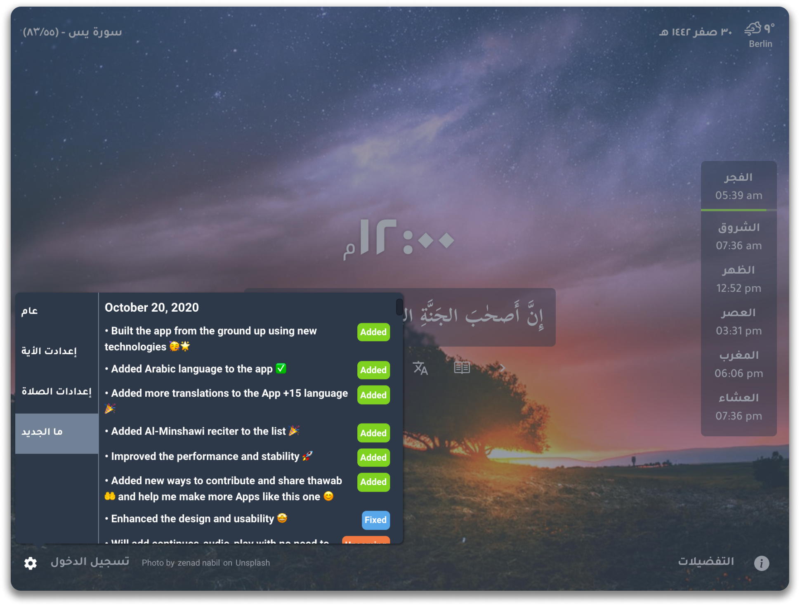

Get closer to the Holy Quran
A Chrome extension that replaces your new tab with a random ayah from the Quran. It keeps you inspired by a verse from the Quran every time you open a new tab.


+15 Translations
Quran Tab supports more than 15 translations of the Quran. You can choose your favorite translation from the settings page. You can also choose to show the translation or not. It's all up to you!
Track What's New
Quran Tab keeps you updated with the latest features and updates. You can check the changelog from the settings page. What'New tab.

Fully English Support
Quran Tab is fully supported in English. You can choose your preferred language from the settings page between English and Arabic and it will be applied to the whole extension and be saved for you.
Download The Extension
You can download the extension from the Chrome Web Store or the Microsoft Edge Add-ons store. it's free and always will be free.


Frequently Asked Questions
Here are some of the most frequently asked questions about Quran Tab. If you have any other questions, please contact us.
-

Quran Tab is a Chrome extension that replaces your new tab with a random ayah from the Quran. It keeps you inspired by a verse from the Quran every time you open a new tab.
-
After installing the extension, you can open a new tab in your browser and you will see a random ayah from the Quran. You can also customize the settings from the settings page.
-
No, Quran Tab is a Chrome extension and it is not available as a mobile app. However, you can use it on your desktop or laptop computer.
-
It's available on all chromium-based browsers like Microsoft Edge, Brave, and Opera. You can install it from the Chrome Web Store or the Microsoft Edge Add-ons store.